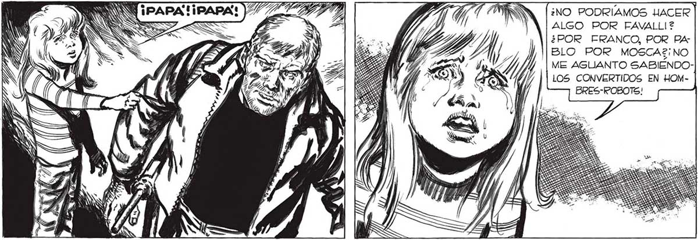
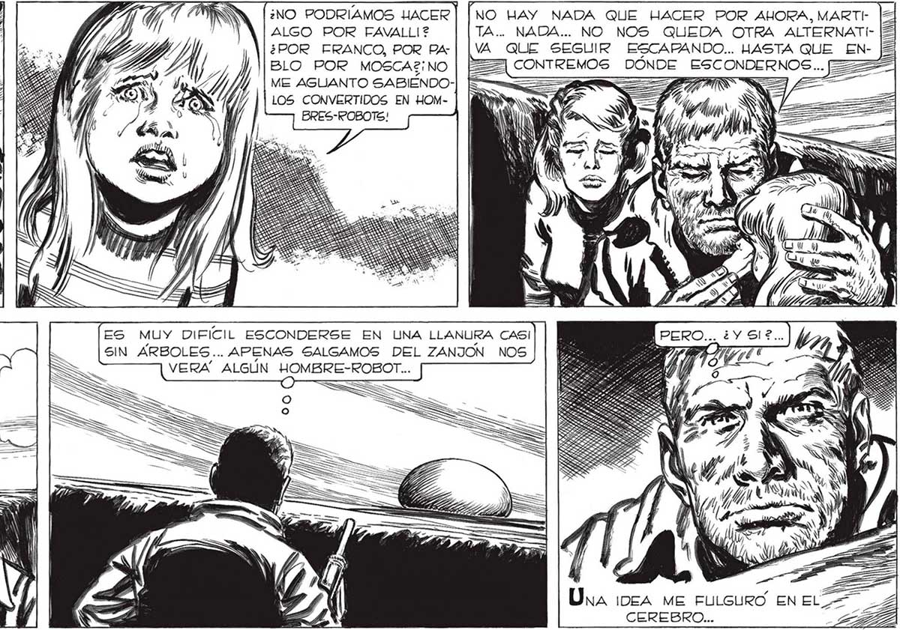
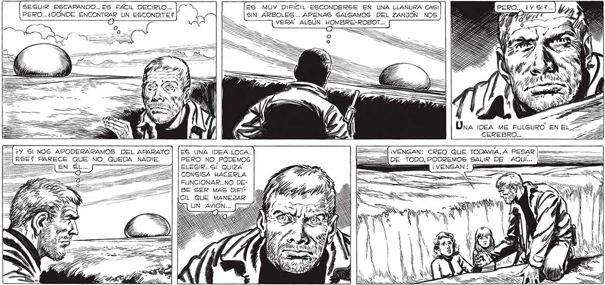

352 ¿NO PODRÍAMOS HACER] [NO HAY NADA QUE HACER POR AHORA, MARTIALGO POR FAVALLI? TA.. NADA... NO NOS QUEDA OTRA ALTERNATI¿POR FRANCO, POR PA4-| | VA QUE SEGUIR ESCAPANDO... HASTA QUE EN- JS BLO POR MOSCA2¡ NO == ESTEMOS DÓNDE E «22% ME AGUANTO SABIÉNDO- _— = z , == LOS CONVERTIDOS EN HOMBRES-RPOBOTE! Ú > e SEGUIR ESCAPANDO... ES FACIL DECIRLO... ES MUY DIFICIL ESCONDERSE EN UNA LLANURA CASI PERO... ¿DONDE ENCONTRAR UN ESCONDITE ? : SIN ARBOLES. . APENAS SALGAMOS DEL ZANJON NOS Mv ISS wi) S =N Net l ÑN Ona ¡nea Me FULGURO EN EL CEREBRO... ¿Y Sl NOS APODERARAMOS DEL APARATO | |£sS UNA IDEA LOCA.. 2 ¡VENGAN! CREO QUE TODAVÍA, A PESAR [= = ESE? PARECE QUE NO QUEDA NADIE PERO NO PODEMOS === DE TODO, PODREMOS SALIR DE AQUÍ... zz ELEGIR...Sl. QUIZA ¡VENGAN ! jamas CONSIGA HACERLA m0 " ] ¡Mi AN a | BE SER MAS DIFICIL QUE MANEJAR e S y FUNCIONAR...NO DELs Ñ ¡0 A A Me AN NN


